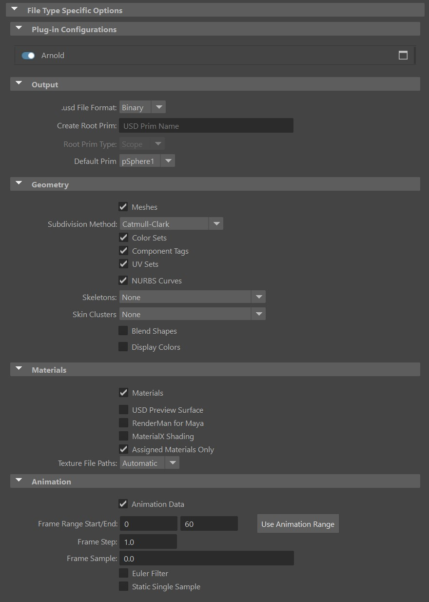
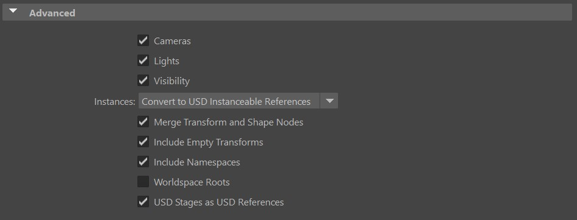

USD Export options
The USD export options appear when you select File > Export and choose USD Export in the Files of type drop-down menu. The following options appear under the File Type Specific Options section, letting you select what is included when you export your file. .usd , .usdc, and .usda are supported file formats for export. Exporting from Maya to USD is limited to one scene to one USD file.
mayaUsdPlugin.mll must be loaded in the Plug-in Manager (Windows > Settings/Preferences > Plug-in Manager) for USD Export to appear in the Files of type drop-down menu.

File-Type Specific Options
Plug-in Configurations
With Maya USD, you can register your plug-in and it will show up in the Plug-in Configurations section. You can easily enable/disable and configure it by clicking the options button. Visit Import and Export Plugins in Python for more information.
Output
.usd File Format
Lets you select from the following export formats:
Binary (Default): If you select this option, your exported file uses the file extension .usdc and is in binary format.
ASCII: If you select this option, your exported file uses the file extension .usda and is in ASCII format.
Note: Manually entering a file name with an extension .usdc or .usda overrides the selection in the drop-down menu (.usdz is not supported). When a file extension is not specified, USD defaults to using the .usd extension with the binary format.
Create Root Prim
If you want to create a root prim for your exported data, enter the name of the root prim here.
Root Prim Type
Upon entering the name of the root prim, you will have the option to define the type of the prim by selecting either Scope or Xform.
Default Prim
Lets you specify the default prim.
Geometry
Meshes
 If selected, mesh geometry is included in your USD export.
If selected, mesh geometry is included in your USD export.
- Subdivision Method: Exports the selected subdivision method as a USD uniform attribute. Attributes that are uniform appear with the "uniform" modifier in any layer that contains a properly-authored opinion for the attribute. You can select from the following options:
- Catmull-Clark (Default): If selected, the exported file contains no additional code.
- Bilinear: If selected, every mesh prim in the exported file is assigned the attribute uniform token subdivisionScheme = "bilinear"
- Loop: If selected, every mesh prim in the exported file is assigned the attribute uniform token subdivisionScheme = "loop"
- None (Polygonal Mesh): If selected, every mesh prim in the exported file is assigned the attribute uniform token subdivisionScheme = "none"
staticSingleSample flag is available on export, which optimizes the conversion of attributes with single time samples to static values. This is especially useful for common mesh attributes as they have the benefit of reducing the complexity of the USD, especially for USD file readers. For example, this will benefit round-tripping USD files into Maya since point-cached meshes will be able to import their UVs if they are static.Related Concepts: See attribute and variability in the Pixar USD Glossary.
Component Tags
 If selected, component tags get exported as USDGeomSubsets. Note: Edges and vertices are unsupported in USD.
If selected, component tags get exported as USDGeomSubsets. Note: Edges and vertices are unsupported in USD.
NURBS Curves
 If selected, curves get exported to USD primTypes NurbsCurves or BasisCurves.
If selected, curves get exported to USD primTypes NurbsCurves or BasisCurves.
Color Sets
 If selected, exports Maya color sets as USD primvars. Primvar stands for "primitive variable". A primvar is a special attribute that a renderer associates with a geometric primitive, and can vary (interpolate) the value of the attribute over the surface/volume of the primitive. When this option is turned on, color sets are written out as
If selected, exports Maya color sets as USD primvars. Primvar stands for "primitive variable". A primvar is a special attribute that a renderer associates with a geometric primitive, and can vary (interpolate) the value of the attribute over the surface/volume of the primitive. When this option is turned on, color sets are written out as primvars:(colorSetName) and primvars:(colorSetName):indices in the exported file.
Related Concepts: See primvars in the Pixar USD Glossary.
UV Sets
 If selected, exports Maya UV Sets as USD primvars. When on, UV sets are written out as
If selected, exports Maya UV Sets as USD primvars. When on, UV sets are written out as primvars:st and primvars:st:indices in the exported file. When there are multiple primvars, the index is appended to st, st1, st2, st3 etc. All UV names with custom metadata attached to the primvar can be expected to roundtrip (through import and export) seamlessly. Indexing will preserve on import and material override generation will only occur when necessary.
Skeletons
Exports Maya joints as part of a USD skeleton. By default this setting is toggled to None. If you want to enable the export of joints, choose between All (to automaticaly create SkelRoots in your USD file) or Only under SkelRoots (to have an explicit selection of SkelRoots).
Skin Clusters
Exports Maya skin clusters as part of a USD skeleton. By default this setting is toggled to None. If you want to enable the export of skin clusters, choose between All (to automaticaly create SkelRoots in your USD file) or Only under SkelRoots (to have an explicit selection of SkelRoots).
BlendShapes
 If selected, exports Maya Blend Shapes as USD blendShapes. Note: This toggle requires Skeletons to be exported as well.
If selected, exports Maya Blend Shapes as USD blendShapes. Note: This toggle requires Skeletons to be exported as well.
Display Colors
 If selected, exports the diffuse color of the geometry’s bound shader as a displayColor primvar on the USD mesh.
If selected, exports the diffuse color of the geometry’s bound shader as a displayColor primvar on the USD mesh.
Materials
Select the material(s) to bind to prims for export. With USD, you can bind multiple materials to prims. You can select from the following options:
Materials: This option is checked by default to include materials as part of the export data. Uncheck it if you want to exclude material from the export.
USD Preview Surface: Shading data to be extracted and mapped to a UsdPreviewSurface Maya shader node.
Note: TheUsdPreviewSurfaceshader node is identical to thepxrUsdPreviewSurfaceshader node provided by previous versions of the Maya USD plug-in. There may be backward compatibility issues with scenes that have both shader nodes loaded. For more information and a workaround, see USD Limitations in the Release Notes topic for your version of Maya USD.Related Concepts: For more information, see PreviewSurface in the Pixar USD documentation.
RenderMan for Maya: Exports the authored Maya shading networks, applying the same translations applied
rfmshaders to the shader types.MaterialX shading: Exports bound shaders as a MaterialX UsdShade network.
Assigned Materials Only: This option is checked by default to only export the materials assigned to the geometry. When unchecked, all the materials in the scene will be exported.
Texture File Path: Choose whether your texture file paths will be written as absolute or relative during the export process. If you select "Automatic", the path type will be automatically determined based on the current settings in the Maya data.
If you have the Maya to Hydra plug-in installed and loaded (Windows > Settings/Preferences > Plug-in Manager > mtoh.mll), you will get an additional legacy exporter which exports to UsdPreviewSurface using the mtoh codebase. This does not support phong and standardSurface and shows up as mtoh in the drop-down menu.
Texture File Paths
Choose whether your texture files are written as relative or absolute paths as you export them to USD. If you select Automatic, it will be chosen for you in the exported USD file based on what they currently are as Maya data.
Animation
Animation Data
 If selected (default), animation data will be exported as USD time samples. The following option appears when Animation data is enabled:
If selected (default), animation data will be exported as USD time samples. The following option appears when Animation data is enabled:
Frame Range Start/End: Sets the first and last frame of animation to export.
Tip: Click Use Animation Range to automatically populate the Frame Range Start/End fields with the scene's current frame range.Frame Step: Specifies the increment between time sample frames during animation export. For example, a Frame Step value of 0.5 exports frames 1.0, 1.5, 2.0, 2.5, etc.
Frame Sample : Specifies the value(s) used to multi-sample time frames during animation export. Multiple values separated by a space (-0.1 0.2) are supported. This setting can be used to help prevent interpolation errors.
Euler Filter: Exports the euler angle filtering that was performed in Maya.
Static Single Sample: Converts animated values with a single time sample to be static instead.
Advanced

Cameras
 If selected, default cameras from your viewport are exported.
If selected, default cameras from your viewport are exported.
Lights
 If selected, lights in your scene are exported.
If selected, lights in your scene are exported.
Visibility
 If selected (default), exports Maya's visibility attributes as USD metadata. If the object is hidden in Maya, then the following metadata is included in the export
If selected (default), exports Maya's visibility attributes as USD metadata. If the object is hidden in Maya, then the following metadata is included in the export visibility = invisible.
Instances
Lets you export instances by choosing from the following options:
- Convert to USD Instanceable References (Default): Exports Maya instances as USD instanceable references.
- Flatten: Instances are flattened.
Merge Transform and Shape Nodes
 If selected (default), merges transform and shape nodes into a single USD xform prim.
If selected (default), merges transform and shape nodes into a single USD xform prim.
Include Empty Transforms
 If selected (default), transform nodes that do not contain any child (empty transforms) will be exported into Xform prims. Deselect it to exclude empty transforms from the export.
If selected (default), transform nodes that do not contain any child (empty transforms) will be exported into Xform prims. Deselect it to exclude empty transforms from the export.
Include Namespaces
 If selected (default), namespaces are exported to the USD file in the following format:
If selected (default), namespaces are exported to the USD file in the following format: nameSpaceExample_pPlatonic1. When off, namespaces are removed from the USD file.
Worldspace Roots
 If selected, exports the root prims with their worldspace transform instead of their local transform.
If selected, exports the root prims with their worldspace transform instead of their local transform.
USD Stages as USD References
 If selected (default), a Maya USD proxyShape is exported as a USD stage with a reference to the USD layer that contains the original stage.
If selected (default), a Maya USD proxyShape is exported as a USD stage with a reference to the USD layer that contains the original stage.